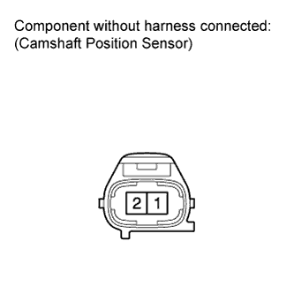
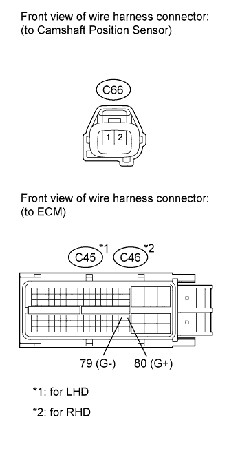

DTC P0340 Camshaft Position Sensor "A" Circuit (Bank 1 or Single Sensor) |
| DTC Detection Drive Pattern | DTC Detection Condition | Trouble Area |
| Crank engine for 4 seconds (STA on) | STA on: No camshaft position sensor signal is sent to the ECM while cranking for 4 seconds or more (2 trip detection logic). |
|
| Idle engine for 1 second (STA off) | STA off: When either condition below is met for 1 second (1 trip detection logic):
|
| 1.INSPECT CAMSHAFT POSITION SENSOR |
 |
Disconnect the camshaft position sensor connector.
Measure the resistance according to the value(s) in the table below.
| Tester Connection | Condition | Specified Condition |
| 1 - 2 | Cold | 835 to 1400 Ω |
| 1 - 2 | Hot | 1060 to 1645 Ω |
|
| ||||
| OK | |
| 2.CHECK HARNESS AND CONNECTOR (CAMSHAFT POSITION SENSOR - ECM) |
 |
Disconnect the camshaft position sensor connector.
Disconnect the ECM connector.
Measure the resistance according to the value(s) in the table below.
| Tester Connection | Condition | Specified Condition |
| C66-1 - C45-80 (G+) | Always | Below 1 Ω |
| C66-2 - C45-79 (G-) | Always | Below 1 Ω |
| Tester Connection | Condition | Specified Condition |
| C66-1 - C46-80 (G+) | Always | Below 1 Ω |
| C66-2 - C46-79 (G-) | Always | Below 1 Ω |
| Tester Connection | Condition | Specified Condition |
| C66-1 or C45-80 (G+) - Body ground | Always | 10 kΩ or higher |
| C66-2 or C45-79 (G-) - Body ground | Always | 10 kΩ or higher |
| Tester Connection | Condition | Specified Condition |
| C66-1 or C46-80 (G+) - Body ground | Always | 10 kΩ or higher |
| C66-2 or C46-79 (G-) - Body ground | Always | 10 kΩ or higher |
|
| ||||
| OK | |
| 3.CHECK CAMSHAFT POSITION SENSOR (SENSOR INSTALLATION) |
 |
Check the sensor installation.
|
| ||||
| OK | |
| 4.CHECK NO. 2 CAMSHAFT TIMING SPROCKET |
Check the condition of the timing sprocket.
|
| ||||
| OK | |
| 5.REPLACE ECM |
Replace the ECM (Click here).
|
| ||||
| 6.REPLACE CAMSHAFT POSITION SENSOR |
Replace the camshaft position sensor (Click here).
|
| ||||
| 7.REPAIR OR REPLACE HARNESS OR CONNECTOR |
|
| ||||
| 8.SECURELY REINSTALL SENSOR |
Securely reinstall the sensor (Click here).
|
| ||||
| 9.REPLACE NO. 2 CAMSHAFT TIMING SPROCKET |
Replace the No. 2 camshaft timing sprocket (Click here).
| NEXT | |
| 10.CONFIRM WHETHER MALFUNCTION HAS BEEN SUCCESSFULLY REPAIRED |
Connect the intelligent tester to the DLC3.
Clear the DTCs (Click here).
Turn the engine switch off.
Start the engine and idle it for 2 seconds.
Enter the following menus: Powertrain / Engine / DTC.
Confirm that the DTC is not output again.
| NEXT | ||
| ||